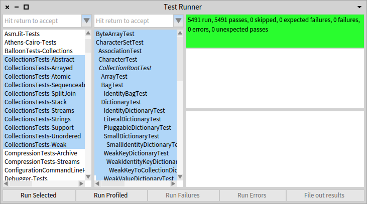

5 Tests, tests and tests
In this chapter we start by showing that tests are simple. Second we present test driven design - basically what we will try to do systematically in this book. Then we discuss why we test, and what makes a good test. We then present a series of small examples showing how to use SUnit.
5.1 Writing a test in 2 minutes
A test is a context, a stimulus and an assertion (verification that we get the correct state). Here is an example on sets. Remember that sets are mathematical entities having only one occurrence of their elements.
First we test that adding an element changes the size of the set.
- Context: we take an empty set.
- Stimulus: we add
$Ainto the empty set. - Assertion: the set has one element.
Another test is that a set only contains only one occurence of one element.
- Context: we take an empty set.
- Stimulus: we add
$Ainto the empty set. - Assertion: the set has one element.
- Stimulus: we add
$Ainto the empty set. - Assertion: the set has still one element.
How do we declare a test in Pharo?
This is really easy to declare one test: we define one class (that will host multiple test definitions) and one method per test.
Here the class MyExampleSetTest should inherit from TestCase. It is the place to define the tests
related to the class Set.
TestCase << #MyExampleSetTest
package: 'MySetTest'Now we can define one test expression as a method. There is one constraint: the method selector should start with test.
MyExampleSetTest >> testAddTwice
| s |
s := Set new.
self assert: s isEmpty.
s add: $A.
self assert: s size equals: 1.
s add: $A.
self assert: s size equals: 1.Then using the Test runner or pressing on icons of the Pharo browser (as shown in Figure 5.1), you will be able to execute the method testAddTwice and it will tell you if it passes or fails (i.e., if its assertions are true). Now that you know that writing a test is not complex. Let us look a bit at the theory before going into more details.
A test is a context, a stimulus and an assertion (verification that we get the correct state).
5.2 Test Driven Design
The interest in testing and Test Driven Development is not limited to Pharo. Automated testing has become a hallmark of the Agile software development movement, and any software developer concerned with improving software quality would do well to adopt it. Indeed, developers in many languages have come to appreciate the power of unit testing.
Neither testing, nor the building of test suites, is new. By now, everybody knows that tests are a good way to catch errors. By making testing a core practice and by emphasizing automated tests, Extreme Programming has helped to make testing productive and fun, rather than a chore that programmers dislike.
The Pharo community has a long tradition of testing because of the incremental style of development supported by its programming environment. In traditional Pharo development, a programmer writes tests in a playground as soon as a method was finished. Sometimes a test would be incorporated as a comment at the head of the method that it exercised, or tests that needed some setup would be included as example methods in the class. The problem with these practices is that tests in a playground are not available to other programmers who modify the code.
Comments and example methods are better in this respect, but there is still no easy way to keep track of them and to run them automatically. Tests that are not run do not help you to find bugs! Moreover, an example method does not inform the reader of the expected result: you can run the example and see the (perhaps surprising) result, but you will not know if the observed behavior is correct.
Using a testing framework such as SUnit is valuable because it allows us to write tests that are self-checking: the test itself defines what the correct result should be. It also helps us (1) to organize tests into groups, (2) to describe the context in which the tests must run, and (3) to run a group of tests automatically. As you saw, in less than two minutes you can write tests using SUnit, so instead of writing small code snippets in a playgound, we encourage you to use SUnit and get all the advantages of stored and automatically executable tests.
5.3 Why testing is important
Now that you see that writing tests is simple. Let's step back and analyze the situation. Unfortunately, many developers believe that tests are a waste of their time. After all, they do not write bugs, only other programmers do that. Most of us have said, at some time or other: I would write tests if I had more time. If you never write a bug, and if your code will never be changed in the future, then indeed tests are a waste of your time. However, this most likely also means that your application is trivial, or that it is not used by you or anyone else. Think of tests as an investment for the future: having a test suite is quite useful now, but it will be extremely useful when your application, or the environment in which it runs, changes in the future.
Tests play several roles:
- First, they provide documentation of the functionality that they cover. This documentation is active: watching the tests pass tells you that the documentation is up to date.
- Second, tests help developers to confirm that some changes that they have just made to a package have not broken anything else in the system, and to find the parts that break when that confidence turns out to be misplaced.
- Finally, writing tests during, or even before, programming forces you to think about the functionality that you want to design, and how it should appear to the client code, rather than about how to implement it.
By writing the tests first, i.e., before the code, you are compelled to state the context in which your functionality will run, the way it will interact with the client code, and the expected results. Your code style will definitively improve.
Several software development methodologies such as eXtreme Programming and Test-Driven Development (TDD) advocate writing tests before writing code. This may seem to go against your deep instincts as software developers. All we can say is: go ahead and try it. Writing the tests before the code helps you know what we want to code, helps you know when you are done, and helps us conceptualize the functionality of a class and to design its interface. Moreover, test-first development gives you the courage to change our application, because you will know when you break something.
We cannot test all aspects of any realistic application. Covering a complete application is simply impossible and is the goal of testing. Even with a good test suite, some bugs will still creep into the application, where they can lay dormant waiting for an opportunity to damage your system. If you find that this has happened, take advantage of it! As soon as you uncover the bug, write a test that exposes it, run the test, and watch it fail. Now you can start to fix the bug: the test will tell you when you are done.
5.4 What makes a good test?
Writing good tests is a skill that you can learn by practicing. Let us look at the properties that tests should have to get the maximum benefit.
- Tests should be repeatable. You should be able to run a test as often as you want, and always get the same answer.
- Tests should run without human intervention. You should be able to run them unattended.
- Tests should tell a story. Each test should cover one aspect of a piece of code. A test should act as a scenario that you or someone else can read to understand a piece of functionality.
- Tests should have a change frequency lower than that of the functionality they cover. You do not want to have to change all your tests every time you modify your application. One way to achieve this is to write tests based on the public interfaces of the class that you are testing. It is OK to write a test for a private helper method if you feel that the method is complicated enough to need the test, but you should be aware that such a test may have to be changed, or thrown away entirely when you think of a better implementation.
One consequence of such properties is that the number of tests should be somewhat proportional to the number of functions to be tested: changing one aspect of the system should not break all the tests but only a limited number. This is important because having 100 tests fail should send a much stronger message than having 10 tests fail. However, it is not always possible to achieve this ideal: in particular, if a change breaks the initialization of an object, or the set-up of a test, it is likely to cause all of the tests to fail.
Now let's go back and write a couple of tests using SUnit.
5.5 SUnit by example
We show a step-by-step example. We continue with the example that tests the class Set. Try editing and compiling the code as we go along.
Pay attention: test classes are special classes. As subclasses of TestCase, they have a different behavior than normal classes: their methods, which start with test are automatically executed on newly created instances of the class. This is what happens when you press the icon close to the method in a class browser (as shown in Figure 5.1).
Step 1: Create the test class
We use the class MyExampleSetTest to group all the tests related to the class Set. First, you should create a new subclass of TestCase called MyExampleSetTest.
TestCase << #MyExampleSetTest
package: 'MySetTest'Step 2: Write a test method
Let's create some tests by defining some methods in the class
MyExampleSetTest. Each method represents one test. The names of the methods
should start with the string 'test' so that SUnit collects them into
test suites. Test methods take no arguments.
Define the following test method named testIncludes. It tests
the includes: method of class Set. The test says that sending the message
includes: 5 to a set containing 5 should return true.
MyExampleSetTest >> testIncludes
| full |
full := Set with: 5 with: 6.
self assert: (full includes: 5).
self assert: (full includes: 6)As you see this is quite simple. Let's continue.
Step 3: Run the test
The easiest way to run the tests is directly from the browser. Simply click on the icon of the class name, or on an individual test method, or use the Run tests (t) . The test methods will be flagged green or red, depending on whether they pass or not (as shown in Figure 5.1).

Step 4: Write more tests
Let's create more tests by defining some methods in the class
MyExampleSetTest.
The second test, named testOccurrences, verifies that the
number of occurrences of 5 in full set is equal to one, even if we
add another element 5 to the set.
MyExampleSetTest >> testOccurrences
| empty full |
empty := Set new.
full := Set with: 5 with: 6.
self assert: (empty occurrencesOf: 0) equals: 0.
self assert: (full occurrencesOf: 5) equals: 1.
full add: 5.
self assert: (full occurrencesOf: 5) equals: 1Finally, we test that the set no longer contains the element 5 after we have removed it.
MyExampleSetTest >> testRemove
| full |
full := Set with: 5 with: 6.
full remove: 5.
self assert: (full includes: 6).
self deny: (full includes: 5)Note the use of the method TestCase >> deny: to assert something that should
not be true. aTest deny: anExpression is equivalent to
aTest assert: anExpression not, but is much more readable.
Step 5: Run all the tests
You can also select sets of test suites to run, and obtain a more detailed log
of the results using the SUnit Test Runner, which you can open by selecting the menu
World > Test Runner.
The Test Runner, shown in Figure 5.2, is designed to make it easy to execute groups of tests.
The left-most pane lists all of the packages that contain test classes (i.e.,
subclasses of TestCase). When some of these packages are selected, the test
classes that they contain appear in the pane to the right. Abstract classes are
italicized, and the test class hierarchy is shown by indentation, so subclasses
of ClassTestCase are indented more than subclasses of TestCase.
ClassTestCase is a class offering utilities methods to compute test
coverage.

Open a Test Runner, select the package MySetTest, and click the Run Selected
button.
Step 6: Alternative ways to execute tests
You can also run a single test (and print the usual pass/fail result summary) by executing a
Print it on the following code: MyExampleSetTest run: #testRemove.
Some people include an executable comment in their test methods as in testRemove below. For example the contents of the comment self run: #testRemove can be executed: select the expression inside the comment (but not the comment) and bring the menu to do a Do it.
It will execute the test.
MyExampleSetTest >> testRemove
"self run: #testRemove"
| empty full |
empty := Set new.
full := Set with: 5 with: 6.
full remove: 5.
self assert: (full includes: 6).
self deny: (full includes: 5)Step 7: Looking at a bug
Introduce a bug in MyExampleSetTest >> testRemove and run the tests again. For
example, change 6 to 7, as in:
MyExampleSetTest >> testRemove
| empty full |
empty := Set new.
full := Set with: 5 with: 6.
full remove: 5.
self assert: (full includes: 7).
self deny: (full includes: 5)The tests that did not pass (if any) are listed in the right-hand panes of the Test Runner. If you want to debug one, to see why it failed, just click on the name. Alternatively, you can execute one of the following expressions:
(MyExampleSetTest selector: #testRemove) debug
MyExampleSetTest debug: #testRemoveStep 8: Interpret the results
The method assert: is defined in the class TestAsserter. This is a superclass
of TestCase and therefore all other TestCase subclasses and is responsible for
all kinds of test result assertions.
The assert: method expects a boolean argument, usually the value of a tested expression. When the
argument is true, the test passes; when the argument is false, the test fails.
There are actually three possible outcomes of a test: passing, failing, and raising an error.
- Passing. The outcome that we hope for is that all of the assertions in the test are true, in which case the test passes. In the test runner, when all of the tests pass, the bar at the top turns green.
- Failing. The obvious way is that one of the assertions can be false, causing the test to fail.
- Error. The other possibility is that some kind of error occurs during the execution of the test, such as a message not understood error or an index out of bounds error. If an error occurs, the assertions in the test method may not have been executed at all, so we can't say that the test has failed; nevertheless, something is clearly wrong!
In the test runner, failing tests cause the bar at the top to turn yellow, and are listed in the middle pane on the right, whereas tests with errors cause the bar to turn red, and are listed in the bottom pane on the right.
As an exercise, modify your tests to provoke both errors and failures.
5.6 The SUnit cookbook
This section will give you more details on how to use SUnit. If you have used another testing framework such as JUnit, much of this will be familiar, since all these frameworks have their roots in SUnit. Normally you will use SUnit's GUI to run tests, but there are situations where you may not want to use it.
About assert:equals:
Note that we either used both assert: aBoolean and assert: expression equals: aValue. The second one provides nicer
feedback when the assertion fails. The two following lines are equal.
self assert: (empty occurrencesOf: 0) equals: 0.
self assert: (empty occurrencesOf: 0) = 0.Using assert:equals: provides a better feedback when the test is failing because we
said explicitly that the result should be 0.
Other assertions
In addition to assert: and deny:, there are several other methods that
can be used to make assertions.
First, assert:description: and deny:description:
take a second argument which is a message string that describes
the reason for the failure, if it is not obvious from the test itself.
Next, SUnit provides two additional methods, should:raise: and
shouldnt:raise: for testing exception propagation.
For example, you would use self should: aBlock raise: anException to test
that a particular exception is raised during the execution of aBlock. The
method below illustrates the use of should:raise:.
MyExampleSetTest >> testIllegal
| empty |
self should: [ empty at: 5 ] raise: Error.
self should: [ empty at: 5 put: #zork ] raise: ErrorTry running this test. Note that the first argument of the should: and
shouldnt: methods is a block that contains the expression to be executed.
Running a single test
Normally, you will run your tests using the Test Runner or using your code
browser. If you don't want to launch the Test Runner from the World menu, you
can execute TestRunner open. You can also run a single test as follows:
MyExampleSetTest run: #testRemove
>>> 1 run, 1 passed, 0 failed, 0 errorsRunning all the tests in a test class
Any subclass of TestCase responds to the message suite and builds
a test suite that contains all the methods whose names start with
the string test.
To run the tests in the suite, send it the message run. For example:
MyExampleSetTest suite run
>>> 5 run, 5 passed, 0 failed, 0 errorsMust I subclass TestCase?
In JUnit you can build a TestSuite from an arbitrary class containing test*
methods. In SUnit you can do the same but you will then have to create a suite
by hand and your class will have to implement all the essential TestCase
methods like assert:. We recommend, however, that you not try to do this.
The framework is there: use it.
5.7 Defining a fixture
In the previous example, we defined the context in each test method and it was a bit boring to duplicate all the logic in any tests. In fact, SUnit proposes a solution to this.
Step 1: Define the class and context
We can define the context using the two instance variables full and empty that
we will use to represent a full and an empty set.
TestCase << #MyExampleSetTest
slots: { #full . #empt};
package: 'MySetTest'Step 2: Setting a reusable context
The method TestCase >> setUp defines the context in which each of the tests will run.
The message setUp is sent before the execution of each test method defined in the test class.
Define the setUp method as follows, to initialize the empty variable to
refer to an empty set and the full variable refers to a set containing two
elements.
MyExampleSetTest >> setUp
empty := Set new.
full := Set with: 5 with: 6In testing jargon, the context is called the fixture for the test.
Step 3: Write some test methods
Now the previous test methods are much more compact and contain less duplication.
MyExampleSetTest >> testIncludes
self assert: (full includes: 5).
self assert: (full includes: 6)MyExampleSetTest >> testOccurrences
self assert: (empty occurrencesOf: 0) equals: 0.
self assert: (full occurrencesOf: 5) equals: 1.
full add: 5.
self assert: (full occurrencesOf: 5) equals: 1MyExampleSetTest >> testRemove
full remove: 5.
self assert: (full includes: 6).
self deny: (full includes: 5)5.8 Chapter summary
This chapter explained why tests are an important investment in the future of
your code. We explained in a step-by-step fashion how to define a few tests for
the class Set.
- To maximize their potential, unit tests should be fast, repeatable, independent of any direct human interaction and cover a single unit of functionality.
- Tests for a class called
MyClassbelong in a class namedMyClassTest, which should be introduced as a subclass ofTestCase. - Initialize your test data in a
setUpmethod. - Each test method should start with the word test.
- Use the
TestCasemethodsassert:,deny:and others to make assertions. - Run tests!
As an exercise, turn the examples given in the first chapter into tests.